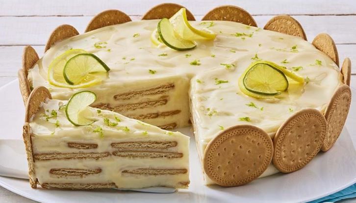

Menú Exclusivo
Postre de milo
 El postre de milo es una torta
tradicional en Colombia, la misma está hecha a base de galletas y chocolate milo, uno de las más famosas del
país. Este rico postre lo puedes hacer para compartir en tus mejores momentos y en cualquier época del año.
Tiempo de preparación 10 min. Tiempo de cocción 20 min.
El postre de milo es una torta
tradicional en Colombia, la misma está hecha a base de galletas y chocolate milo, uno de las más famosas del
país. Este rico postre lo puedes hacer para compartir en tus mejores momentos y en cualquier época del año.
Tiempo de preparación 10 min. Tiempo de cocción 20 min.
Valor: $4.000
postre de maracuya
 Este postre es perfecto para cualquier ocasión, especialmente si te gusta el sabor agridulce del maracuyá.
Este postre es perfecto para cualquier ocasión, especialmente si te gusta el sabor agridulce del maracuyá.
INGREDIENTES 10 GALLETAS SALTINAS DORÉ® (77 g) 4 cucharadas de mantequilla derretida (56 g) 1/2 taza de LECHE CONDENSADA LA LECHERA® (140 g) 1/2 taza de CREMA DE LECHE NESTLÉ® (120 g) 1 taza de pulpa de maracuyá sin azúcar (230 g) 2 sobres de gelatina sin sabor disuelta en 4 cucharadas de agua tibia (14 g)
Valor: $4.000
Postre de limon
El postre de limón es un postre muy popular en Colombia y en otros países. Es un postre cremoso y refrescante que se hace con limones frescos, leche condensada, crema de leche y galletas dulces.
INGREDIENTES 10 galletas SALTINAS DORÉ® (77 g) 1/2 taza de LECHE CONDENSADA LA LECHERA® (140 g) 1 taza de CREMA DE LECHE NESTLÉ® (240 g) Ralladura y zumo de 3 limones.
Valor: $4.000